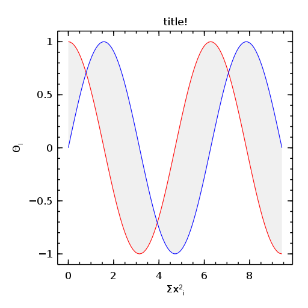

Org-mode and julia: an introduction
Table of Contents
\newpage
This document is an introduction to Org-mode + julia. The only
prerequisites are a passing familiarity with Org-mode and Emacs
keybindings.
1 What you need to get started
Note: several code blocks below have the header argument :eval
no-export. This means that the code block can be evaluated
interactively by C-c C-c with point in the block but will not be
evaluated during export. That header argument is present because
those blocks have settings which conflict with my current setup (or
are otherwise redundant) yet are meant to be useful for other
people.
1.1 Julia
You are going to need a working installation of julia. The homepage
on GitHub has the pertinent links collected all in one place:
- Homepage: http://julialang.org
- Binaries: http://code.google.com/p/julialang/downloads/list
- Packages: http://docs.julialang.org/en/latest/packages/packagelist/
- Mailing lists: http://julialang.org/community/
- IRC: http://webchat.freenode.net/?channels=julia
- Source code: https://github.com/JuliaLang/julia
- Git clone URL:
git://github.com/JuliaLang/julia.git - Documentation: http://julialang.org/manual/
Fair warning: the initial install takes a long time, largely because julia has a lot of dependencies. Never fear, though; subsequent updates are brief.
1.2 ESS - Emacs Speaks Statistics
You are going to need a relavely bleeding-edge version of ESS since it
is only due to recent ESS changes that this document is even possible.
The place to look for the latest version of ESS is here. At some
point after installation you will likely put something like the
following in your .emacs:
(require 'ess-site)
Once ESS is up and running you will need to tell it where the julia
executable is. Edit the following and place it in your .emacs:
(setq inferior-julia-program-name "/path/to/julia-release-basic")
After the above steps are complete then you should be able to start
Emacs and launch an interactive julia session via M-x julia. If
you manage to get that settled then at this point you should be able
to do everything in the Introduction to Julia.
1.3 Add-on packages
There is a growing list of contibuted packages which add to the base
functionality of julia. For example, several statistics packages
were mentioned a few moths ago in a blog post by John Myles White
entitled The State of Statistics in Julia. The instructions in the
blog post are (already) a bit out-of-date; the currently recommended
way to install the packages is to launch an interactive julia
session and execute the following command:
Pkg.add("DataFrames", "Distributions", "GLM", "MCMC", "Optim", "NHST", "Clustering")
I recommend you not execute the Pkg.add command here (if you do it
in this buffer then you can't watch the download and install as it is
happening). As John notes, the RDatasets package takes a lot longer
to download than the others. Perhaps it would be wise to install it
separately.
Pkg.add("RDatasets")
You will notice both Pkg.add code blocks have the :eval never
header argument.
1.4 Org-mode
Since you have at least a passing familiarity with org-mode then you
probably already have something like the following in your .emacs:
(require 'org)
Another handy setting to have is
(setq org-confirm-babel-evaluate nil)
The following lines (either here or in your .emacs) permit inline
image display in the Emacs buffer.
(add-hook 'org-babel-after-execute-hook 'org-display-inline-images) (add-hook 'org-mode-hook 'org-display-inline-images)
1.5 ob-julia.el
You are going to want a copy of ob-julia.el to fully integrate
julia with Org-mode. You can find it and some other documents to
get you started here. Download ob-julia.el into a convenient place.
Edit the code block below and evaluate it by C-c C-c with point in
the code block.
(load "/path/to/ob-julia.el")
An alternative method is to put the following in your .emacs (these
should go below the (require 'org) line):
(add-to-list 'load-path "/path/to/ob-julia.el")
(org-babel-do-load-languages
'org-babel-load-languages
'((emacs-lisp . t) (julia . t)))
You are all set.
2 Evaluation inside the Org buffer
If you've gotten this far then everything is installed in the right place and initialized properly. Now the fun begins.
2.1 :results value
The collection class of the :results header argument supports two mutually exclusive options: value and output. When :results value is specified, Org takes the body of the source block, creates a function with that body, evaluates the function with julia, stores the result in a .csv file, then converts the .csv file to an emacs-lisp table, and finally inserts the table in the buffer. Whew! The bottom line? Hit C-c C-c in the following code block.
rand(2,3)
| 0.999939439042129 | 0.05372529032959994 | 0.02450126420987675 |
| 0.08199970646956767 | 0.015234813811405568 | 0.1871767733729599 |
As expected, the output of the command was a 2x3 array and Org inserted a table into the buffer. This functionality is relatively powerful with other languages such as R, for instance, because ob-R.el works with TAB separated files instead and read.table in R supports reading of much more varied data types compared to readcsv in julia (at the present time). Nevertheless, the functionality exists in julia and as time passes and julia adds more options we'll add more, too.
2.2 :results output
We will get a lot more mileage out of the :results output option. Every command in the src block body is evaluated by julia in turn and the results are placed in the buffer to be typeset in a verbatim environment. This option is similar to typing commands in julia at an interactive session. The analogy isn't exact, though, because at an interactive session it is one (1) command in, one (1) result out. Multiple lines in an org SRC block in contrast have RESULTS which are lumped together. Like this: (do C-c C-c)
2 + 3 print("hello") sqrt(5)
5 hello 2.23606797749979
It is sometimes helpful to split up SRC blocks into smaller chunks so that buildup of RESULTS does not get out of hand. Also, specific to julia we can sometimes put a semicolon at the end of the command to suppress output, like this:
2 + 3; print("hello"); sqrt(5);
hello
Notice the outer two results were suppressed, but not the middle one.
3 Graphics
The most stable and fully featured of the julia graphics packages at
the time of this writing appears to be the Winston package, although
the Gadfly package is also available and appears promising. To
install the Winston package execute the following in an interactive
session. As above I recommend you not execute this here (hence the
:eval never header argument).
Pkg.add("Winston")
The Winston package has lots of dependencies and many of them must be built from source (on Ubuntu).
3.1 Plotting with Winston
To get up and running with plots in julia check out the many example
graphs (with code) on the Winston examples page. As far as Org-mode is
concerned, you can do plotting
- Interactively with a plot window,
- In-buffer with a
png, - Via export into LaTeX, HTML, Beamer…
All three methods require setting up the plot object as a first step,
after, of course, loading the Winston package. Let's set up a simple
plot object (do C-c C-c with point in the block):
using Winston x = linspace(0, 3pi, 100) c = cos(x) s = sin(x) p = FramedPlot(); setattr(p, "title", "title!") setattr(p, "xlabel", L"\Sigma x^2_i") setattr(p, "ylabel", L"\Theta_i") add(p, FillBetween(x, c, x, s) ) add(p, Curve(x, c, "color", "red") ) add(p, Curve(x, s, "color", "blue") )
We did :results silent to omit the lengthy output from being
inserted in the org buffer. So the hard part is finished – we've
created a plot object p which is now available to manipulate.
To launch a plot window and look at the graph right now evaluate the following code block.
Winston.tk(p)
A plot should open in an X11 window with a pretty graph. Suppose instead we'd like to insert the graph in the org buffer right now. We need the inline-image display options described in section Org mode. Assuming you've done that, evaluate the following code block.
file(p, "example1.png")

The code block evaluates the command file(p, "example1.png"), which
tells julia to write the graph to a .png file (also available are
.pdf, .svg, and .eps, though none of those can be inserted in
the org buffer). The header argument :results graphics tells
org-mode that the results are going to be graphics (as opposed to
elisp tables or STDOUT output) and the header argument :file
example1.png tells org to insert an link to the file example1.png
(just created by julia) right after the the code block. This link
is evaluated by org-display-inline-images which results in a .png
in the org buffer.
Notice that we had to specify the file name twice, once inside the
code block and once as a header argument. Some languages (such as R)
only require one specification: the header argument. The reason for
this is simple: ob-R.el includes code which dynamically constructs a
graphics device call behind the scenes, the call depending on the file
extension in the :file header argument. Such a thing is more
difficult with julia because different graphics packages have
markedly different device calls (for instance, Gadfly uses
SVG("filename", p)). Maybe someday the calls will stabilize and it
will make sense to write wrapper code to do that automatically. In
the meantime, use whatever package you like and write the filename
twice.
We'll defer the export method discussion to the next section.
4 Export to other formats
Sooner or later you will want to share your work with others, people
who have not (yet) fully come to the realization that Emacs+Org is
really quite better than sliced bread and also is destined to conquer
the entire observable Universe. Perhaps you'd like to make a
presentation about how awesome julia is at a(n) (inter)national
conference. Org-mode supports export to multiple formats. Here we'll
describe a few. There has been work recently on a brand new exporter
which hasn't yet made it to the official maintenance branch as of the
time of this writing. The following instructions apply to the new
exporter, which is one of the reasons why it was important in the
first section to update your Org-mode.
4.1 HTML
This is the easiest. Insert the following in your .emacs:
(require 'ox-html)
Then open this file and execute C-c C-e to open the export
dispatcher. From there you have three options:
h Hexports as an HTML buffer (can be saved later),h hexports as an HTML file (saved in the working directory),h oexports as an HTML file and opens in a browser.
That's it. There are a lot of other cool things you can do; see the
Org manual. If you export to HTML then you are going to want your
images (if any) to be .png or .svg files.
4.2 LaTeX
This one is just as easy. Insert the following in your .emacs:
(require 'ox-latex)
Then open this file and do
C-c C-e l Lto export as a LaTeX buffer,C-c C-e l lto export as a LaTeX file,C-c C-e l pto export as LaTeX and generate a PDF,C-c C-e l oto export as LaTeX, generate PDF, and open.
There are a ton of other LaTeX things to do. See the Org manual.
If you export to PDF then it's fine to use image formats .png,
.eps, or .pdf, but the .png exports as a blurry raster image -
use .pdf instead (or .eps for external plain LaTeX export).
4.3 Beamer
Beamer is a special case unto itself. The short story is that you need
the following in your .emacs:
(require 'ox-beamer)
Then also add an entry for the beamer class in your .emacs. Here is
a boilerplate version which you can customize to taste:
(add-to-list 'org-latex-classes
'("beamer"
"\\documentclass[presentation]{beamer}
\[DEFAULT-PACKAGES]
\[PACKAGES]
\[EXTRA]"
("\\section{%s}" . "\\section*{%s}")
("\\subsection{%s}" . "\\subsection*{%s}")
("\\subsubsection{%s}" . "\\subsubsection*{%s}")))
Since beamer is such a special case I have tweaked a minimal julia
beamer presentation in Sample julia Presentation. See there, see the
Org manual, and see Worg too for more information.
5 Other things to mention
- You can extract all of the
juliasource code (also known as tangling the Org document) with the keystrokesC-c C-v t. This will generate ajuliascript (with extension.jl) in the working directory. Note that this capability is turned off by default. You can activate it by adding the header argument:tangle yesto those code blocks you'd like to tangle or doing a buffer-wide header setting with the line#+PROPERTY: tangle yesnear the top of the org file. See the Org manual for details. - At the time of this writing
ob-julia.elonly supports:sessionevaluation and does not support external process evaluation. This means that everySRC juliablock should have a:session SOMETHINGheader argument. Alternatively, you can put a buffer-wide header argument at the top of the org file, something like this:#+PROPERTY: session *julia*
- You may have noticed that those
juliacode lines with no output (for instance, lines with semicolons;at the end) generate an empty line in the#+RESULTSbelow the code block. Consequently, the first time you evaluate ajuliacode block without having previously initiated ajuliasession withM-x juliathe#+RESULTSwill have an extra mystery empty line. It is no mystery. The first statement executed by ESS when loadingjuliais anincludecommand. That command has no output. If that empty line bothers you then execute the code block again; the mystery empty line will disappear. - Be careful when executing code blocks with
:results value. Code block evaluation in that case works by writing thejuliacommands to an external file in the/tmpdirectory, evaluating the commands withjulia, writing the results to a comma-separated (.csv) file, then reading the.csvfile and converting the result toelispfor insertion to the org buffer. Not all object types are supported byjuliafor writing to.csvfiles, in particular,1x1matrices and arrays of ASCII characters are not supported (yet). If you try to evaluate code blocks in those cases (or any other case where output to.csvis not supported) then you will get an error. - After playing around with
juliafor a while you will notice that instead of printing long arrays it will elide them with vertical dots in the middle of the output which look similar to this \( \vdots \) in the buffer. It turns out that LaTeX does not like those three dots because they correspond to a special character, and the upshot is that your org file will not export to LaTeX successfully. One way around this is to explicitly declare that special symbol in the LaTeX header. That is the reason for the following line at the top of this org file.#+LaTeX_HEADER: \DeclareUnicodeCharacter{22EE}{\vdots} ob-julia.eldoes not supportrownamesandcolnameslikeob-R.eldoes.